| 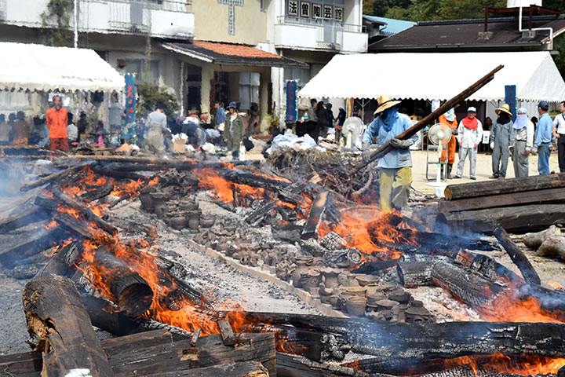 |
開館10周年記念企画「第21回秋の縄文野焼き祭り」を開催しました。
10月11日日曜、低気圧が雲の名残を少しだけなびかせて去り、曇り空の夜明けは次第に青空へと変わりました。
野焼きの神様が微笑んでくれたようです。
７時過ぎに火おこしをして点火。
白い煙がスーッと立ち昇り、祭りのはじまりを告げます。
今年８月には猪風来美術館から館長らふたりが米国でのARTs of JOMON展の準備のため渡米して、縄文アート
を核とした文化交流がなされました。
デンバー国際空港で11月末まで開催されるアート展以外にも、ボルダ―市での縄文ワークショップやネイ
ティブアメリカンのホピ族野焼き体験などを通し、縄文アートが海外でも高い評価と関心をももって受け止め
られることを実感。
そして縄文造形と縄文野焼きへの強い共感。
縄文野焼きの「人類の文化の根源」という普遍性は、現代への警鐘や未来への希望の源泉となることを予感し
ています。
=∴=∵=∴=∵=∴=∵=∴=∵=∴=∵=∴=∵=∴=∵=∴=∵=∴=∵=∴=∵=∴=∵=∴=∵=∴=∵=∴=
今回焼き上げる作品は200点以上。
例年をはるかに越える点数です。
陶芸教室生を中心に、地元小学校の支会活動や、法曽焼同好会などで作られた作品を並べます。
まずは長く設置した野炉のまわりで作品をあぶり焼き。
みごとな縄文造形の土器や可愛らしい土偶鈴、ユニークな縄文風ペッカリーから独創的なオブジェまで。
秋の日差しの中で火にあぶられ、熱い風に身をゆだねて皆気持ち良さそうです。
| 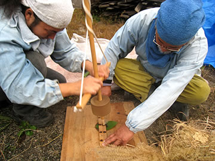 | 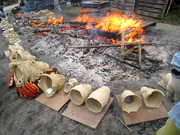 |
| 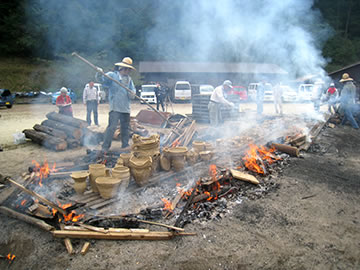 | 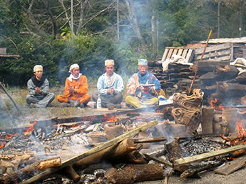 |
丸太や材木をきらさずに焚き続けます。
徐々に大きくなる火勢に、刻々と色を変化させてゆく作品たち。
火のエネルギーが作品の中へとしだいに蓄えられて、焼き上がる瞬間を待っています。
スタッフも汗だくになりながら、必死で火の中へ飛び込んでゆきます。
本当に命がけの踏ん張りで渾身の作業。
最大のクライマックスにさしかかると炎が龍のように立ちのぼり、まるで生まれ出ようとする作品の産声が
渦巻くようです。
| 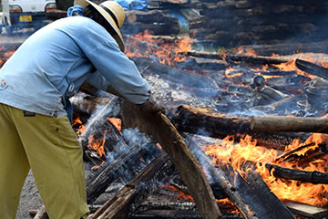 | 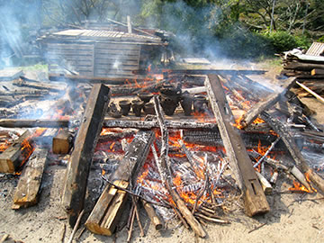 |
| 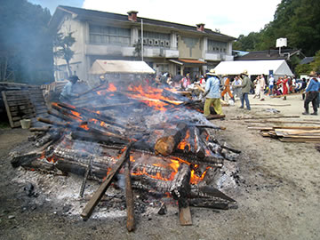 | 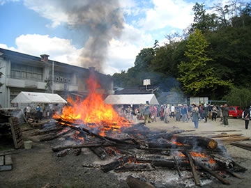 |
| 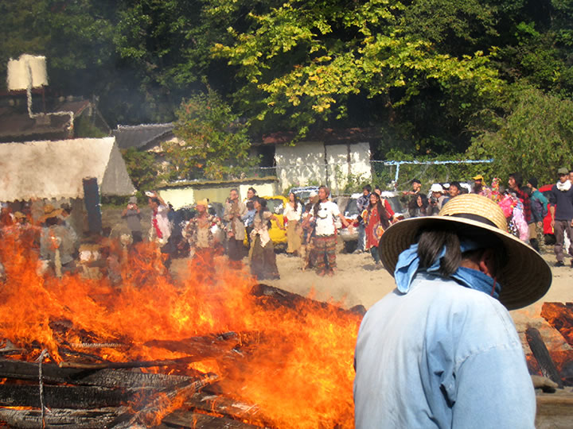 | |
やがて炎が穏やかにおさまってくると、焼き上がった作品がしだいに姿を現します。
火のパワーが新しい命を宿した作品の誕生の瞬間！
今回は岡山・倉敷・総社など岡山県内のみならず、遠く東京や岐阜、京都、大阪、広島、香川など、縄文に
惹かれた人たちが200人以上参加してくれました。
急遽野焼きスタッフに加わって協力してくださった方々もおり、たいへん力になりました。
縄文三昧のとても濃密な一日でした。
| 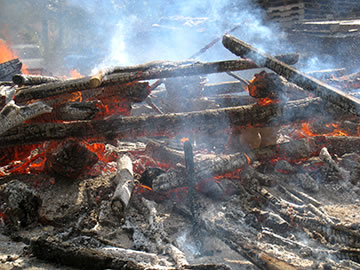 | 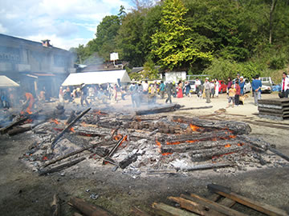 |
| 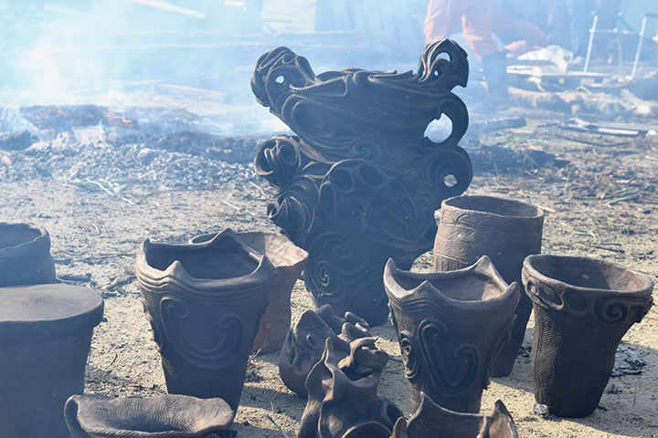 | |
=∴=∵=∴=∵=∴=∵=∴=∵=∴=∵=∴=∵=∴=∵=∴=∵=∴=∵=∴=∵=∴=∵=∴=∵=∴=∵=∴=
《縄文野焼き大賞》
| 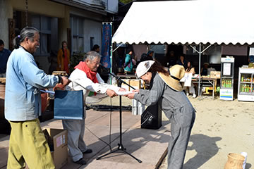 | 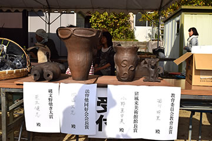 |
焼き上がった作品の中から、特に縄文造形の素晴らしさや独創性に優れたもの、また縄文の心あふれる作品
を対象に「縄文野焼き大賞」など４賞を選考・表彰いたしました。
受賞作は11月末まで当館に展示いたします。
○縄文野焼き大賞
縄文土偶 赤木 健志(あかぎ たけし) 高梁市
○縄文野焼き新見市教育長賞
縄文ペッカリー 西川 明里(にしかわ あかり) 草間台小５年
○縄文野焼き法曽焼同好会会長賞
縄文土器 内山 大志(うちやま たいし) 三重県桑名市
○縄文野焼き猪風来美術館館長賞
縄文土器 小野 真由美(おの まゆみ) 岡山市
| 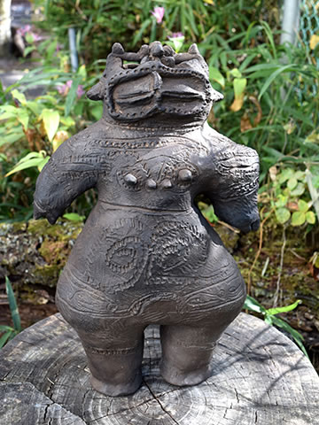 | 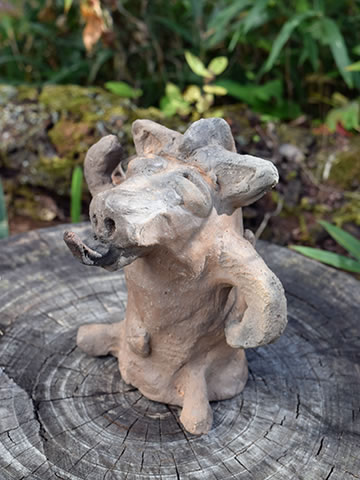 |
| 【縄文野焼き大賞】縄文土偶 | 【縄文野焼き新見市教育長賞】縄文ペッカリー |
| 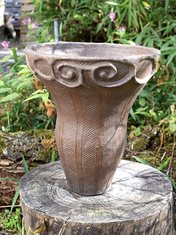 | 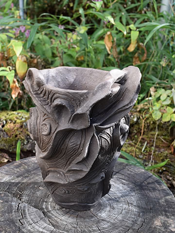 |
| 【縄文野焼き法曽焼同好会会長賞】縄文土器 | 【縄文野焼き猪風来美術館館長賞】縄文土器 |
=∴=∵=∴=∵=∴=∵=∴=∵=∴=∵=∴=∵=∴=∵=∴=∵=∴=∵=∴=∵=∴=∵=∴=∵=∴=∵=∴=
《縄文体験コーナー》
～縄文土器で煮炊き～
土器で煮炊きした汁をみんなで堪能！
底の小さな縄文土器のフォルムは、周りに薪を燃やして煮炊きするのに最適。
土器が熱くなり沸騰すると、薪を足さなくても熱が効率よく保たれて温かいままです。
野菜やキノコ、タカキビのだんごを入れて、縄文汁の完成です。
| 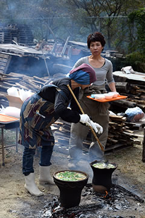 | 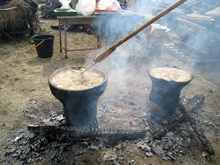 |
～粘土でつくろう・石で勾玉をつくろう～
今日も大盛況！
小さい子供から大人まで粘土に夢中。
縄文文様みたいに渦巻きを施したり、縄目を転がしたり押し付けたり、それぞれの独創が光ります。
これら体験コーナーで作られた作品は11月中に焼き上げる予定です。
白・黒・ピンクの滑石をやすりでこすって勾玉の形にします。
根気のいる作業だけどみな丹念に作業に集中。
天然石なので中からいろんな模様が現れてきます。
勾玉に紐をとおしてペンダントの出来上がりです。
| 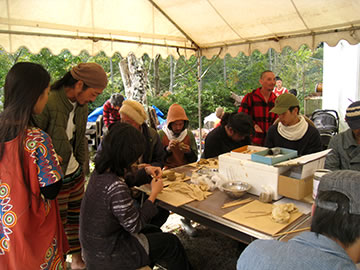 | 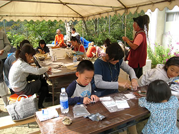 |
=∴=∵=∴=∵=∴=∵=∴=∵=∴=∵=∴=∵=∴=∵=∴=∵=∴=∵=∴=∵=∴=∵=∴=∵=∴=∵=∴=
《販売コーナー》
地元法曽焼同好会女性会員の皆さんが大奮闘。
昼食にはうどん・猪カレーうどん・猪カレーライスなどが提供されました。
飲み物・お菓子や地元特産品法曽茶・法曽焼、ピオーネの販売もありました。
| 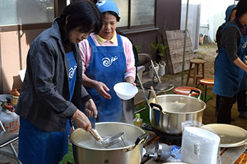 | 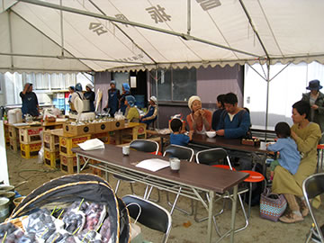 |
=∴=∵=∴=∵=∴=∵=∴=∵=∴=∵=∴=∵=∴=∵=∴=∵=∴=∵=∴=∵=∴=∵=∴=∵=∴=∵=∴=
《縄文の炎 コラボ・パフォーマンス》
秋の空に縄文の炎が燃えさかる前で、おやじバンドV-STAFFや有志の方々による演奏やパフォーマンスが盛大
に繰り広げられました。
エレキギターの音色、打ち鳴らされる縄文太鼓のリズム、インディアンフルートや琴などさまざまな楽器の
奏でる調べ、炎の熱気とともに舞う踊り、たくさんの合いの手と喝采……炎と会場の人たちの心が一体となり、
縄文のうねりとなって法曽の谷間に大きくこだましていました。
出演者と参加者の方々、素敵な時間を本当にありがとうございました。
| 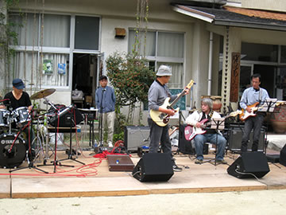 | 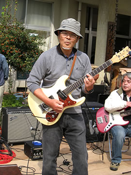 |
| 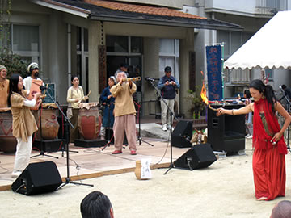 | 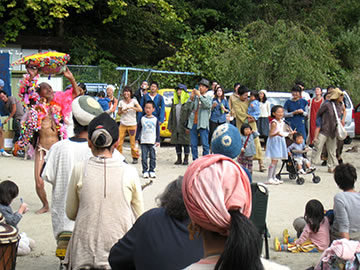 |
| 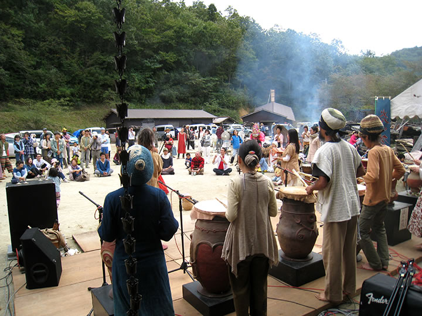 | |
=∴=∵=∴=∵=∴=∵=∴=∵=∴=∵=∴=∵=∴=∵=∴=∵=∴=∵=∴=∵=∴=∵=∴=∵=∴=∵=∴=
| 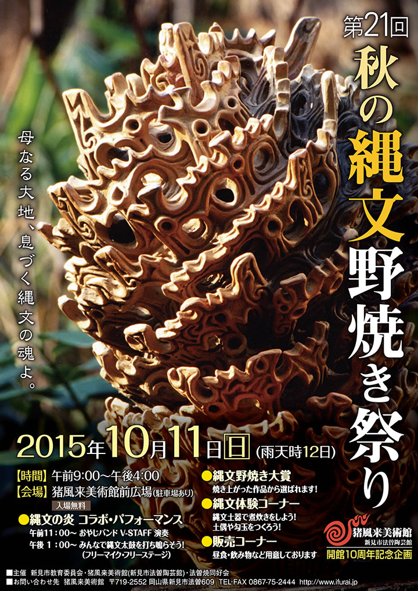 |
| 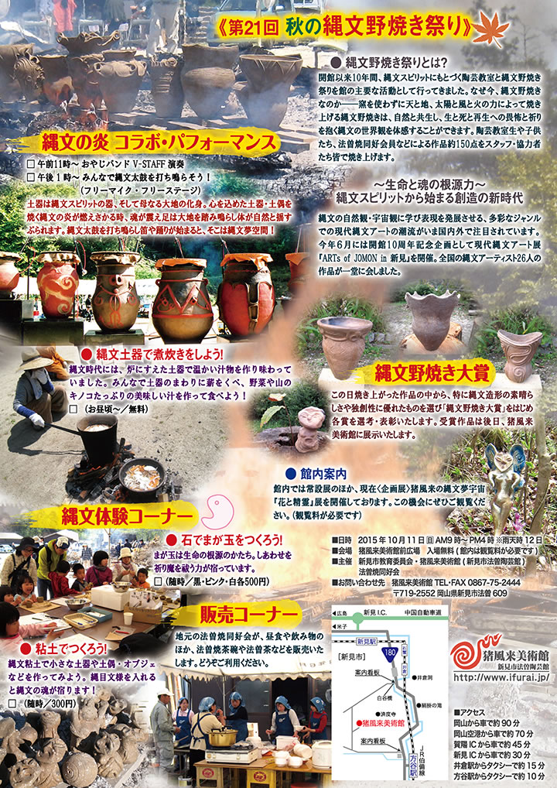 |
| 【第２１回「秋の縄文野焼き祭り」チラシ】 →（表面）PDF版を開く →（裏面）PDF版を開く |